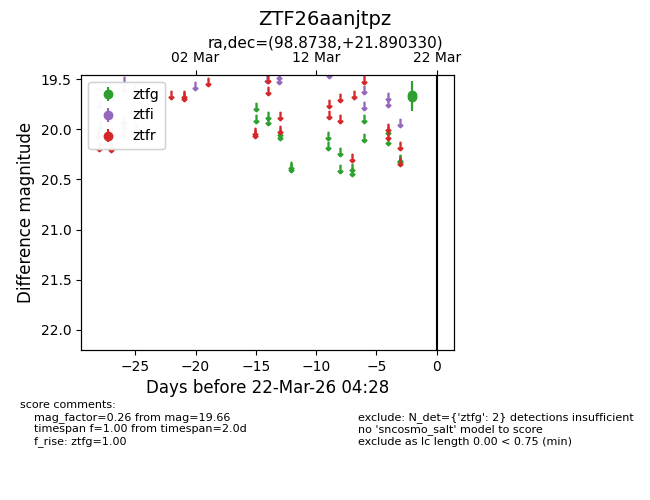
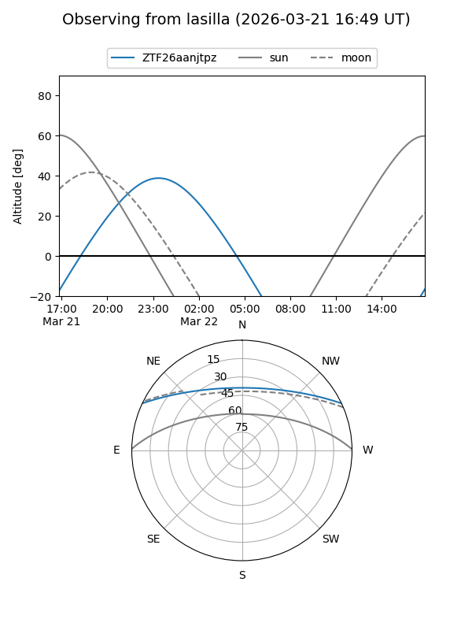
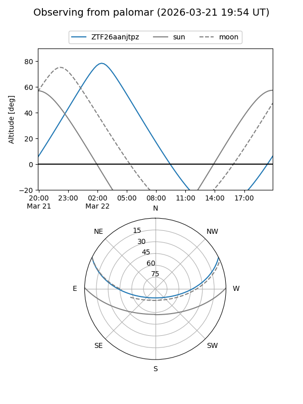

ZTF26aanjtpz
Target ZTF26aanjtpz at 2026-03-22 04:31
Aliases and brokers:
FINK: link
Lasair: link
ALeRCE: link
alt names
ZTF26aanjtpz (ztf,fink_ztf)
Coordinates:
equatorial (ra, dec) = 98.8738,+21.89033
equatorial (HMS+DMS) = 06:35:29.71,+21:53:25.19
galactic (l, b) = (191.6144,+6.46547)
Flags:
Photometry:
last ztfg=19.66
2 ztfg detections
Lightcurve

Visibility


Additional plots